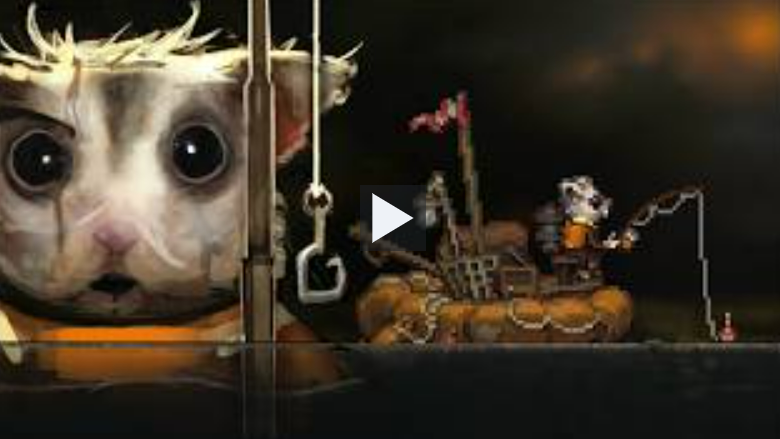

Overview
Hooked is a survival adventure game with resource gathering,
exploration, and an engaging fishing mini-game. This guide is
designed for new players who need a quick, clear introduction.
Game Objectives: Survive environmental hazards,
complete quests, and progress through the game by fishing,
upgrading gear, and managing resources. The game focuses on
exploration and survival rather than a strict "win" condition, but
mastering mechanics leads to completing most content.
Game page:
https://echerryart.itch.io/ld59hooked

I. Basic Game Mechanics
1. Lack of Beginner's Tutorial
At first, Hooked may feel confusing because it does not include a
detailed beginner tutorial. Pay attention to the interface and
quest system to learn how the game works.
-
Understanding the Interface: Learn where
inventory, equipment, quests, and settings are located. Knowing
these controls saves time and helps you act quickly.
-
Quest System: Main and side quests provide
story guidance and tasks. Check quest hints often to avoid
missing important objectives.
-
Common Confusions:
-
Players often misunderstand bubble prompts at the start —
it's unclear whether to use a mask or radiation suit.
-
Many realize only after 20 minutes that losing health
doesn't deduct money.
-
Releasing the fishing line (letting go of the mouse) is
essential, especially for big fish, but not clearly
indicated.
2. Overview of Gameplay
-
Exploration and Gathering: Explore areas and
collect resources to build a stable foundation.
-
Crafting and Upgrading: Use resources to craft
tools, gear, and upgrades. Prioritize items that improve
survival and mobility.
-
Game Mechanics Insight: Players note that
continuously fishing, buying upgrades, and retreating during
toxic gas events allows for relatively easy completion of most
content.
II. Understanding Dangerous Elements
1. Identifying Threats
Hooked includes environmental hazards like toxic gas and
radiation. Identifying these threats early is the key to surviving
longer.
-
Gases: Some areas contain harmful gas that
causes continuous damage. Use protective equipment or masks
before entering these zones.
-
Radiation: Radiation can affect you quickly in
certain areas. Leave the area immediately and use medicine or
gear to reduce radiation.
Important: Avoid dangerous zones when your health
is low. Always retreat first and recover before continuing.
2. Strategies to Avoid Danger
-
Monitor Health: Keep food and medicine ready so
you can recover quickly.
-
Observe the Environment: Watch for visual cues
and changes in terrain. If danger appears, switch routes or
retreat immediately.
-
Event Cycles: Dangerous events like rain, toxic
gas, and repeat cycles seem fixed and lack variation.
Understanding these patterns helps in timing retreats.
-
Upgrade System: Invest fishing earnings into
gear that better handles harsh environments, such as better
masks or radiation suits.
-
Common Mistakes:
-
Misusing equipment: Forgetting to equip protective gear
before entering hazardous areas.
-
Ignoring environmental changes: Not noticing subtle cues
like color shifts indicating incoming danger.
-
Overextending during events: Staying out too long during
toxic gas, leading to unnecessary damage.
III. Mastering the Fishing Mini-Game
Fishing is one of the most important systems in Hooked. It
provides food and rewards, and mastering it will make your play
experience much smoother.
1. Understanding the Fishing Mechanism
-
Controls: Hold the left mouse button to apply
pressure and use the right mouse button to adjust the line.
Avoid repeatedly clicking the left button. Right-click to rotate
fish and items.
-
Inventory Usage: In the inventory screen,
right-click items to use them.
2. Fishing Tips
-
Observe Fish Behavior: Fish movement and
surface ripples can tell you when to cast and when to react.
-
Reaction Speed: When a fish bites, keep
pressure on the left button and use the right button to manage
the line. Practice makes this easier over time.
-
Releasing the Line: Releasing the fishing line
(letting go of the mouse) is crucial, especially for catching
bigger fish — it's a key mechanic to discover through
experimentation.
3. Common Misconceptions
-
Misconception 1: Clicking the left mouse button
repeatedly to increase force. Correct: Use
steady pressure instead.
-
Misconception 2: Ignoring line tension.
Correct: Keep tension balanced to prevent
losing the fish.
V. Advanced Tips
1. Fishing Mastery
-
Timing Casts: Learn to predict fish behavior by
observing patterns in ripples and movements for more efficient
catches.
-
Line Management: Experiment with releasing and
reeling at different speeds to handle larger, more aggressive
fish.
2. Resource Management
-
Upgrade Prioritization: Focus on mobility and
protection upgrades early, then shift to fishing enhancements
for better income.
-
Efficient Exploration: Plan routes to minimize
backtracking and maximize resource collection during safe
periods.
IV. Conclusion
With this guide, you should feel more confident entering Hooked.
Focus on the fundamentals, protect yourself from hazards, and
practice fishing to improve steadily.
Good luck, enjoy the game, and return here whenever you need a
quick refresher.
← Back to Game Guide Collection
Loading comments...